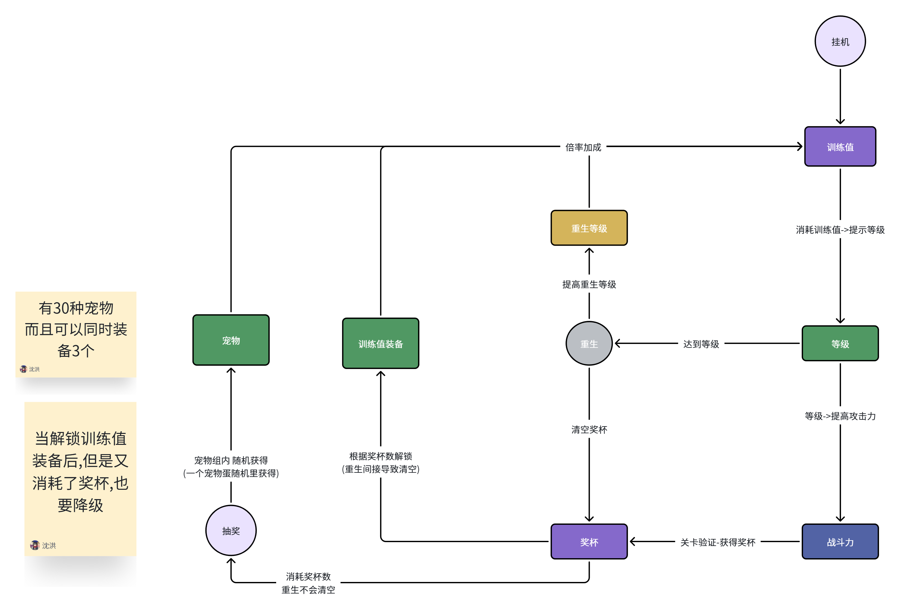

Game Design
玩法设计
挂机成长、连续闯关、收集强化与重生提速的核心体验和交互规则
1. 玩法目标
玩家挂机积累训练值，升级战斗力并连续闯关获得奖杯；奖杯用于扭蛋和训练值武器，宠物与重生进一步提高训练效率。核心体验是“挂机成长、连续闯关、收集强化、重生提速”。重生始终由玩家主动选择，不限制继续升级。
2. 核心循环

2.1 主成长循环
挂机→获得训练值→消耗训练值提升等级→等级提高战斗力→从合适世界第 1 关开始闯关→停止并领取奖杯
2.2 重生循环
达到最低重生等级→自主选择重生→提高重生等级→提高训练值倍率→加速下一轮成长
达到最低重生等级只会解锁重生操作；玩家可以暂不重生并继续无限升级。
2.3 收集强化支线
- 扭蛋：每个扭蛋包含一组宠物奖品。开启扭蛋消耗奖杯，同一扭蛋的抽取价格会随抽取次数增加。
- 宠物成长：首次抽到宠物时获得该宠物；再次抽到相同宠物时增加经验，经验达到升级要求后宠物升级。
- 奖池收束：满级宠物从所属扭蛋的有效奖池中移除；一个扭蛋内的全部宠物满级后，该扭蛋不可继续抽取。
- 宠物生效：宠物只有激活后才提供训练值倍率，不再使用“最多装备 3 只”的规则。
- 训练值武器：根据当前奖杯数解锁对应等级的武器；武器提供训练值倍率加成。
- 重生等级、已激活宠物和训练值武器的倍率共同作用于训练值获取。
3. 系统规则
| 系统 | 输入与条件 | 结算与限制 |
|---|---|---|
| 挂机与训练值 | 挂机持续产出训练值。 | 重生等级、已激活宠物和训练值武器提供倍率加成；具体基础产量与倍率算法待数值设计确定。 |
| 等级 | 玩家主动消耗训练值提升等级。 | 等级提升战斗力；每级训练值消耗和战斗力成长待数值设计确定。 |
| 关卡闯关 | 每次开始闯关时，系统选择当前最合适的世界，并从该世界第 1 关开始按顺序挑战。 | 通过关卡会累计本轮待领取奖杯。玩家闯到想停止的关卡后可主动停止，并一次性领取本轮奖杯；下次闯关重新从届时最合适世界的第 1 关开始，不从上次停止的关卡续打。 |
| 重生 | 等级达到当前最低重生等级后，由玩家主动执行。 | 达到门槛后不强制重生，角色等级没有上限且可继续提升。执行重生后，重生等级提高，当前奖杯清空；角色等级和未消耗训练值是否重置仍待确认。 |
| 扭蛋 | 消耗当前抽取价格对应的奖杯，从该扭蛋仍可抽取的宠物奖品中随机获得一只。 | 每个扭蛋拥有一组宠物奖品；同一扭蛋越抽越贵。满级宠物不再进入该扭蛋的有效奖池；全部宠物满级后，扭蛋进入不可抽取状态。 |
| 宠物 | 首次抽到时获得宠物；重复抽到相同宠物时增加该宠物经验。 | 经验达到升级要求后宠物升级。宠物及其等级、经验不因重生清空；只有已激活宠物的倍率生效。 |
| 训练值武器 | 按照当前持有奖杯数解锁武器等级。 | 武器等级随当前奖杯数动态变化；抽奖消耗奖杯或重生清空奖杯后，若不再满足门槛，武器必须同步降级或锁定。 |
4. 交互流程
- 进入游戏后自动挂机；界面显示训练值、获取速度、等级、下一等级消耗和战斗力，玩家在资源足够时升级。
- 开始闯关时，系统选择当前最合适的世界并从第 1 关连续挑战；界面显示世界、关卡和待领取奖杯。
- 玩家主动停止或本轮结束时一次性领取奖杯；下次闯关重新选择世界并从该世界第 1 关开始。
- 玩家用奖杯抽取仍有有效奖池的扭蛋。首次抽取获得宠物，重复抽取增加经验并即时升级；满级宠物移出奖池，空奖池禁用抽取。
- 玩家激活已获得的宠物。奖杯变化时同步重算训练值武器档位，达到或跌破门槛会解锁、升级、降级或锁定。
- 达到最低重生等级后可继续升级或主动重生；确认后提高重生等级、清空奖杯，并重算训练值倍率与武器状态。